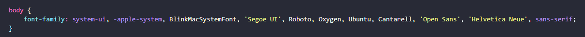
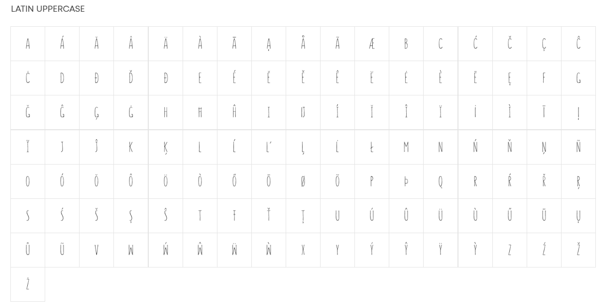

La elección de una tipografía adecuada es esencial para transmitir profesionalidad y coherencia en todos los materiales escritos. Se recomienda seleccionar una tipografía legible y versátil que complemente la identidad visual del Ayuntamiento de Cádiz. Algunas opciones podrían ser fuentes sans-serif modernas o clásicas.
El texto usado en toda la guía de estilo usa estas tipografías dependiendo en donde lo vea el usuario
Mientras que, Summer sería mi apuesta para los títulos
